Artículos de interés
Aprendizaje continuo
En la sociedad del conocimiento la supervivencia depende del aprendizaje continuo
Antiguamente, uno se podía defender con una habilidad o profesión duramente adquirida durante la época de estudiante. Hoy en día no es suficiente: La supervivencia en la sociedad del conocimiento, competida y demandante, depende del aprendizaje continuo.
La misión más importante de la educación debería ser ayudar a los niños a aprender cómo adquirir nuevo conocimiento, para que como adultos sean capaces y estén dispuestos a adquirir el conocimiento que necesiten. La meta de la educación debe estar más enfocada a la comprensión que al desempeño.
El aprendizaje es una parte esencial del trabajo cotidiano para todos en una organización. Para mejorar el aprendizaje, los problemas deben extraerse de la práctica profesional cuando sea posible y el estudiante debe asumir la responsabilidad de su propio aprendizaje.
El estudiante autónomo es una persona auto-motivada que quiere enriquecer su comprensión de los fenómenos cotidianos y mejorar su toma de decisiones. Busca su actualización continua y reconoce en el aprendizaje un elemento esencial para fundamentar su futuro. El éxito de las organizaciones descansa en la cooperación y la coordinación de esfuerzos individuales y reconoce que en el largo plazo, la única fuente de ventajas competitivas es la capacidad de la organización para aprender más rápidamente que sus rivales.
La mayoría de los empleados de una organización son aprendices. Sólo unos cuantos son expertos y aún estos se equivocan de vez en cuando. Los expertos están en la academia y la consultoría enseñándoles a otros cómo arriesgar sus recursos. Los aprendices necesitan retroalimentación para poder aprender y desarrollar sus competencias para el trabajo. La empresa en su conjunto también necesita aprender para ser competitiva y precisa administrar el capital intelectual con el que cuenta.
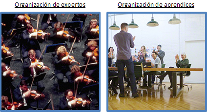
Los aprendices son curiosos, les gusta la ambigüedad y cuestionan lo convencional. Se relacionan con la gente confiadamente, con una mentalidad abierta y son tolerantes y empáticos. Confrontan la novedad con gran disposición, les gusta experimentar y desarrollar nuevas ideas. Son proactivos, aceptan retos, forman equipos y logran resultados.
En el proceso de aprendizaje se confronta la novedad en el hemisferio derecho del cerebro, la cual se convierte en rutina en el hemisferio izquierdo, formando creencias nuevas que sustituyen a las viejas. El aprendizaje es un proceso continuo de generación de creencias que se transforman en los modelos mentales que guían nuestra conducta y se refuerza continuamente a través de la retroalimentación.
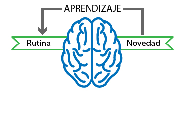
El aprendizaje es un proceso mediante el cual se percibe una idea nueva, se compara con una creencia almacenada en la memoria y se construye un modelo mental que se asimila como una nueva creencia o refuerza un modelo ya existente, para poder lidiar con una situación futura. La nueva creencia se afirma con la repetición que refuerza los circuitos neuronales que la representan en la mente (según algunos estudios, hay que repetir hasta siete veces las cosas para aprendérselas).
Primeramente encontramos una situación nueva para la cual no hay una respuesta prefabricada, esto es observación. Después de repetidas exposiciones a situaciones similares, asimilamos la experiencia y emergen estrategias de respuesta adecuadas, esto es el resultado. Finalmente construimos representaciones selectivas y simplificadas de la realidad usando nuestras percepciones y conocimientos, estos son los modelos mentales.
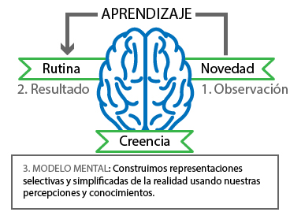
Durante el aprendizaje consciente de tareas se involucra una cantidad considerable de corteza cerebral. Con la práctica ya no se requiere la atención consciente y los actos se vuelven automáticos, por ejemplo, después de aprender a andar en bicicleta.
La nueva creencia puede ser falsa o verdadera, según cómo se hayan inferido las evidencias que la soportan. El orden de los factores si altera el producto.
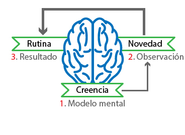
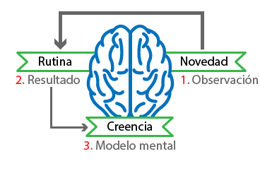
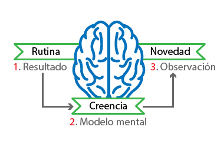
El proceso de aprendizaje puede o no comprender algún tipo de razonamiento para inferir las conclusiones. El aprendizaje por imitación es el más elemental y se extiende a todo el reino animal. El aprendizaje por razonamiento inductivo es el más avanzado y es exclusivo de nuestra especie.
Se infiere por razonamiento deductivo cuando se desea aplicar una teoría ya probada a un problema novedoso. ¿La receta sirve para resolver el problema? Sí sirve, entonces, aplíquese la receta. Se refuerza el modelo mental, es decir, la teoría.
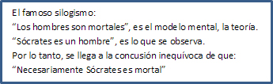
Infiere la conclusión usando razonamiento deductivo, y refuerza la teoría.
Se infiere por razonamiento inductivo cuando se desea desarrollar una teoría que explique un fenómeno desconocido. ¿Hay una receta para resolver el problema? No hay, entonces desarróllese la receta. Se prueba el modelo mental, es decir, la hipótesis.
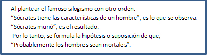
Se infiere la conclusión probando la hipótesis para lo cual usa razonamiento inductivo. Esta es la mejor forma de aprender.
El razonamiento abductivo nunca pasa por la zona de aprendizaje. Las conclusiones que se infieren usando este tipo de razonamiento se basan en la superstición y generalmente son falsas. Se infiere por pensamiento abductivo cuando se presenta un resultado no deseado y se quiere indagar la causa para eliminarla. El problema con este tipo de razonamiento es que lo más probable es que no se identifique la causa primordial, sino efectos secundarios y que estos traten de eliminarse y además se fabriquen culpables sin que el problema se resuelva.
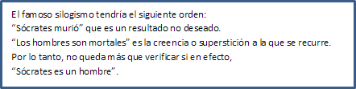
Lo cual no tiene sentido ni es útil para resolver el problema.
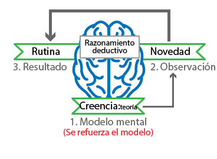
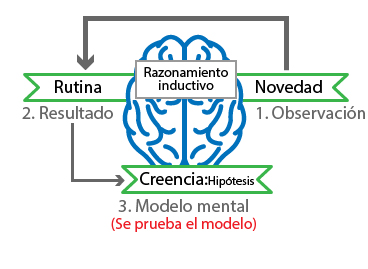
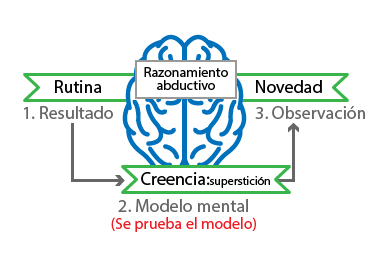
El proceso de enseñanza – aprendizaje de Sage-Wise, facilita el desarrollo y aplicación de teorías de negocio eficaces, con laboratorios y herramientas de vanguardia que ejercitan el razonamiento inductivo y deductivo.
El aprendizaje puede darse en dos instancias: Una básica para las cosas prácticas, como aprender un idioma y otra más elevada para ser competitivos, como la profesión.
Se puede aprender recurriendo a la imitación de la conducta o a la aprehensión de las ideas de otros. Aquí, ante la ausencia del pensamiento crítico, se pueden producir creencias falsas sobre las cuales eventualmente se basaría la toma de decisiones.
También se puede aprender recurriendo a la indagación o experimentación y al cuestionamiento o refutación de las ideas. En este caso, el proceso de aprendizaje se centra en el reconocimiento de que hay una pregunta que debe hacerse, que hay creencias que deben examinarse o afirmaciones que se quieren defender y la toma de decisiones se basaría en creencias verdaderas. SAGE-WISE promueve esta forma de aprendizaje.